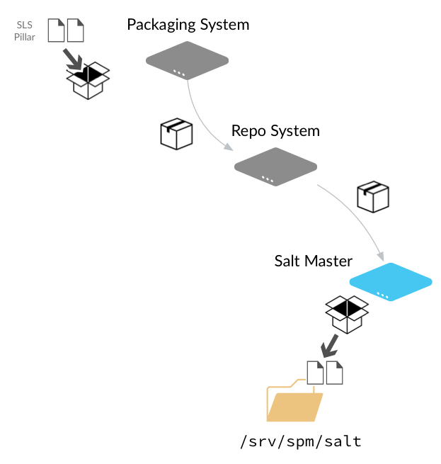

Salt Package Manager¶
The Salt Package Manager, or SPM, enables Salt formulas to be packaged to simplify distribution to Salt masters. The design of SPM was influenced by other existing packaging systems including RPM, Yum, and Pacman.
{kind=link}
注解
The previous diagram shows each SPM component as a different system, but this is not required. You can build packages and host the SPM repo on a single Salt master if you'd like.
Packaging System
The packaging system is used to package the state, pillar, file templates, and other files used by your formula into a single file. After a formula package is created, it is copied to the Repository System where it is made available to Salt masters.
Repo System
The Repo system stores the SPM package and metadata files and makes them available to Salt masters via http(s), ftp, or file URLs. SPM repositories can be hosted on a Salt Master, a Salt Minion, or on another system.
Salt Master
SPM provides Salt master settings that let you configure the URL of one or more SPM repos. You can then quickly install packages that contain entire formulas to your Salt masters using SPM.
Contents
Version 2016.3.0-182-gbed98d8